Momen indah ketika payung raksasa di Masjid Nabawi...
A digital communications sample for the Cornell Career Services Social Media & Digital Communications Assistant Intern position. I created this portfolio to show how I would translate career resources into student-facing content that feels less intimidating and easier to act on.
My background combines policy communication, data visualization, Canva-based design, short-form storytelling, and the lived perspective of an international graduate student learning how U.S. career systems work from the inside.
This portfolio includes existing social media work, engagement screenshots, and three sample career posts I would create for Cornell Career Services. The goal is to show both my creative judgment and my ability to adapt that judgment to Cornell student career communication.
Clear captions, organized visuals, short-form video, content calendars, Canva templates, and student-centered framing for resources such as Cornell Career Network, resume reviews, networking, workshops, and career exploration.
As a Cornell graduate student and international student, I understand how career information can feel scattered or intimidating. I would create content that feels practical, inclusive, and easy to use.
For career communication, performance matters because students often discover resources while scrolling. I look at views, reach, saves, comments, and non-follower engagement to understand what travels beyond an existing audience.

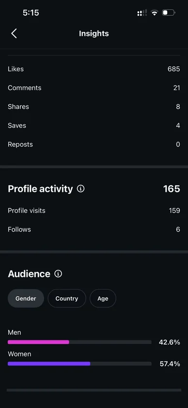


This compact vertical sample shows how I would present video without letting it dominate the portfolio. For Cornell Career Services, a similar format could support quick explainers, workshop reminders, peer tips, and career resource walkthroughs.
For @cornellcareerservices, I would keep videos simple, caption-friendly, and practical. Examples include: how to start with Cornell Career Network, what to say in a first networking message, how to prepare for a career fair, or where to find appointment support.
The goal is not to make career content feel polished for its own sake. The goal is to make students feel that the next step is doable.
Interactive content can turn passive scrolling into a small action. For Cornell Career Services, this format could become quick checks on resumes, networking language, interview prep, LinkedIn profiles, or career fair readiness.
Prompt: Which networking message is stronger?
Swipe: Students choose between two versions, then the final slide explains why one message is clearer, more specific, and easier for alumni to answer.
Outcome: Students leave with one usable template they can try through Cornell Career Network or LinkedIn.
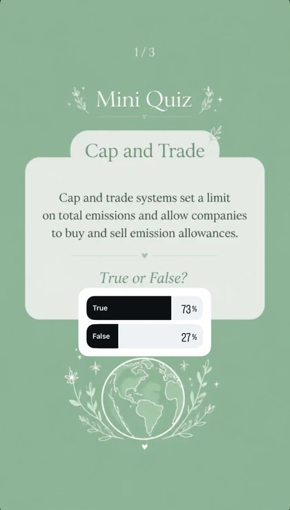

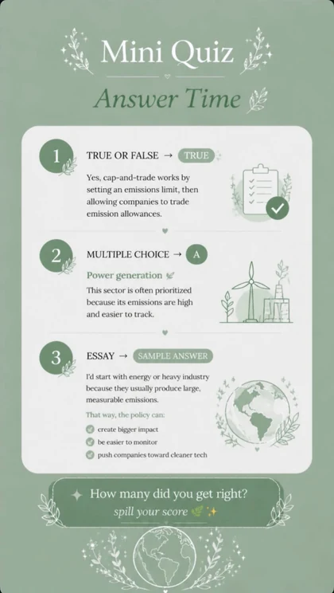

This sample shows my experience organizing dense policy and economic information into a structured visual deck. For Cornell Career Services, the same discipline is useful for turning complex career guidance into clear posts, event recaps, resource explainers, and student-facing slides.


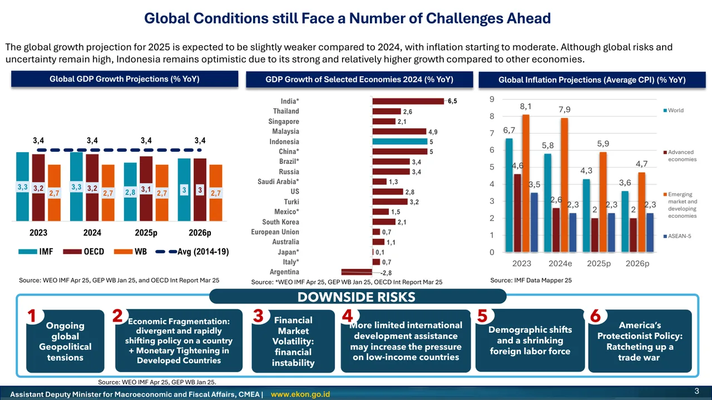


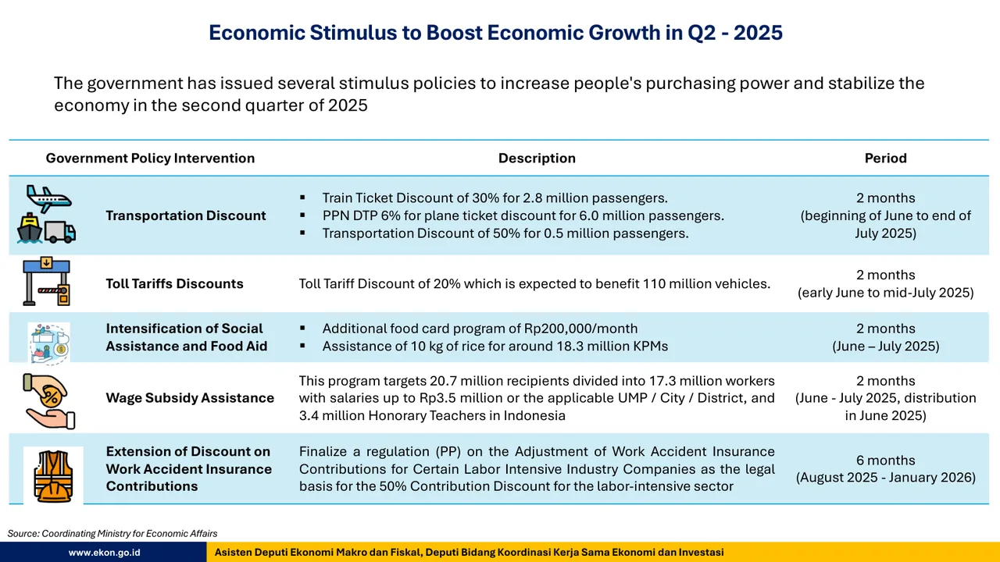


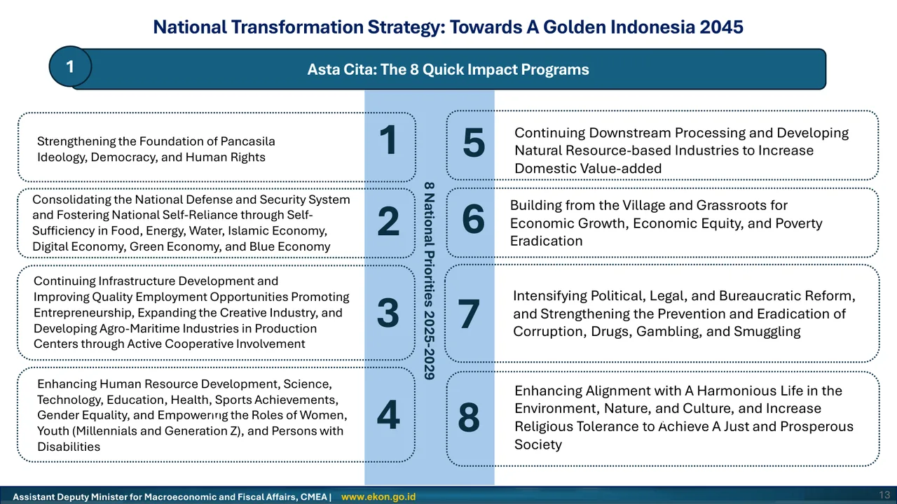


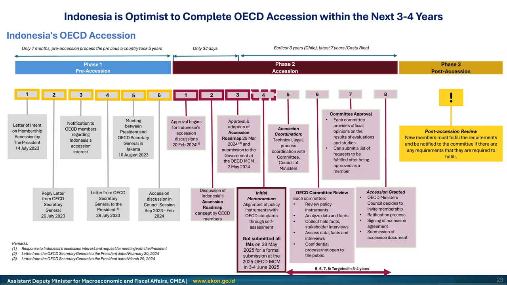
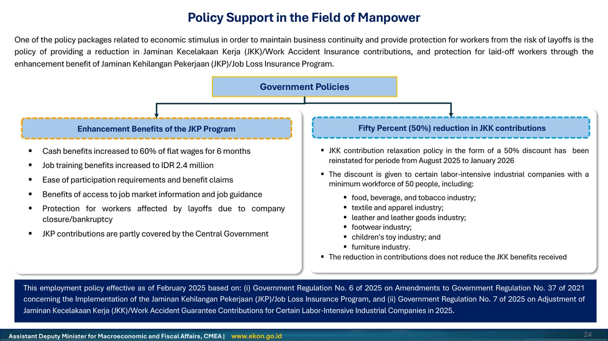


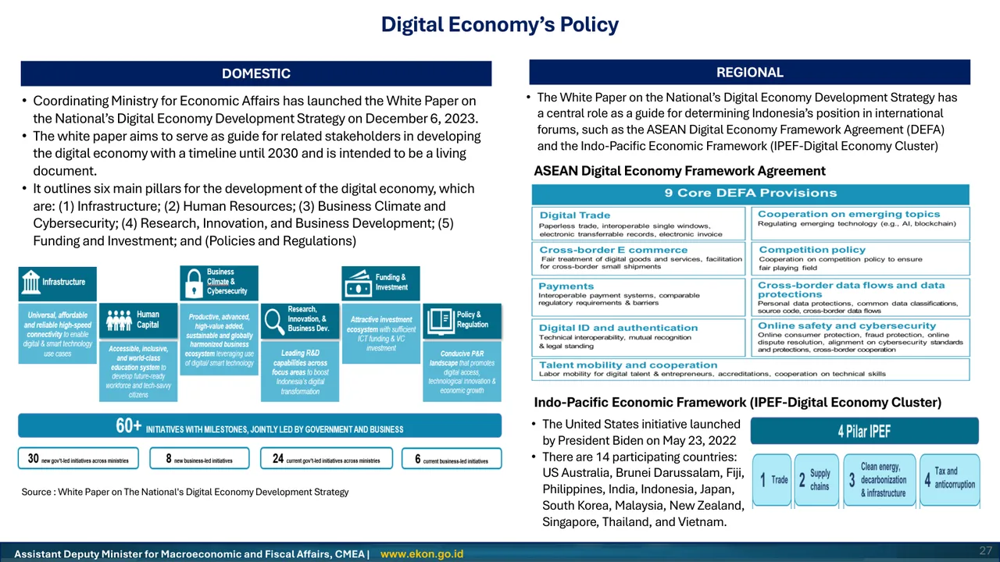
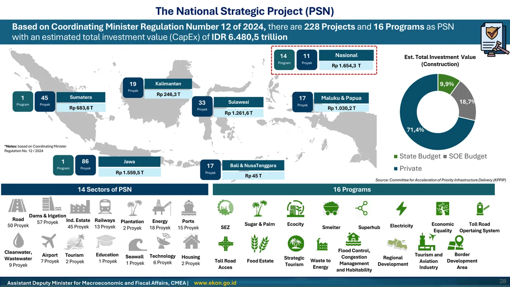

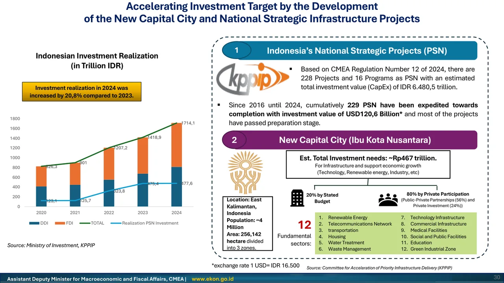

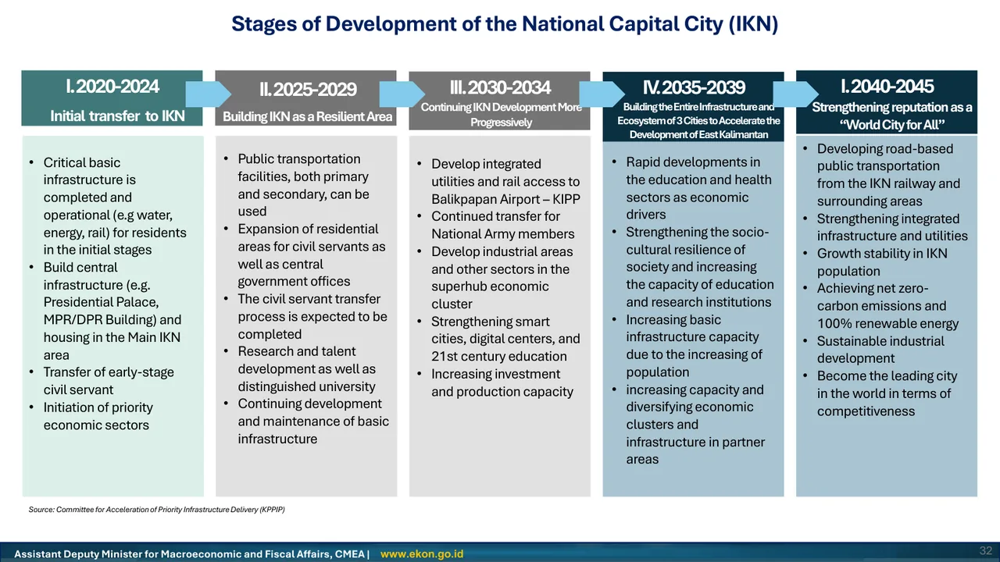
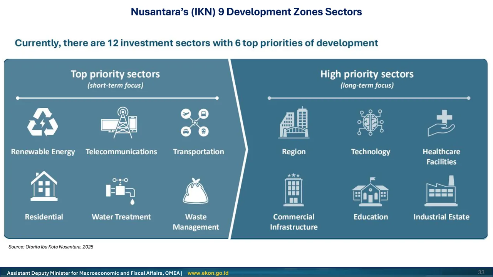


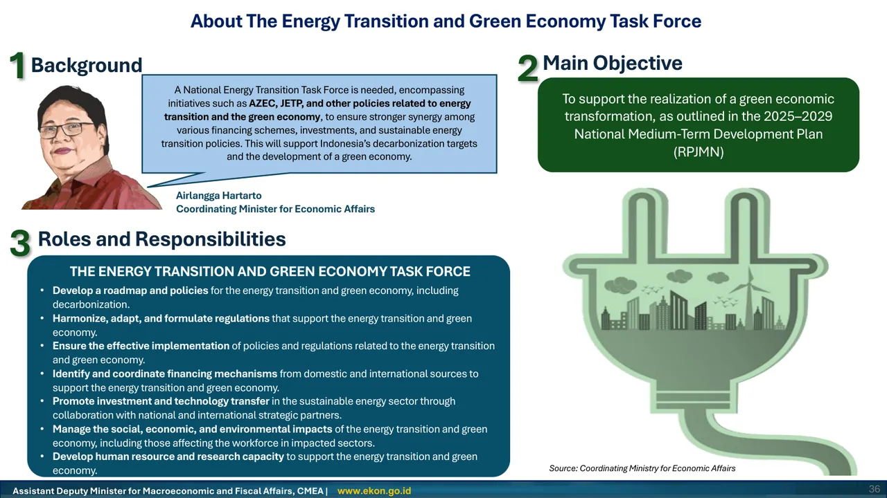

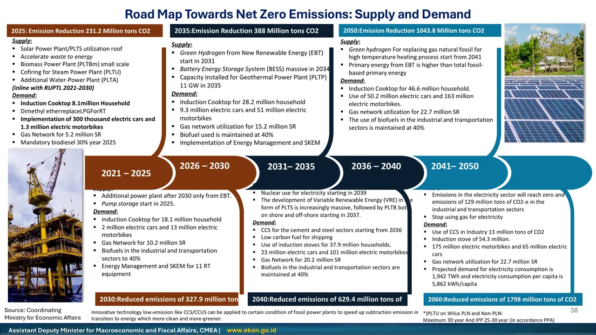
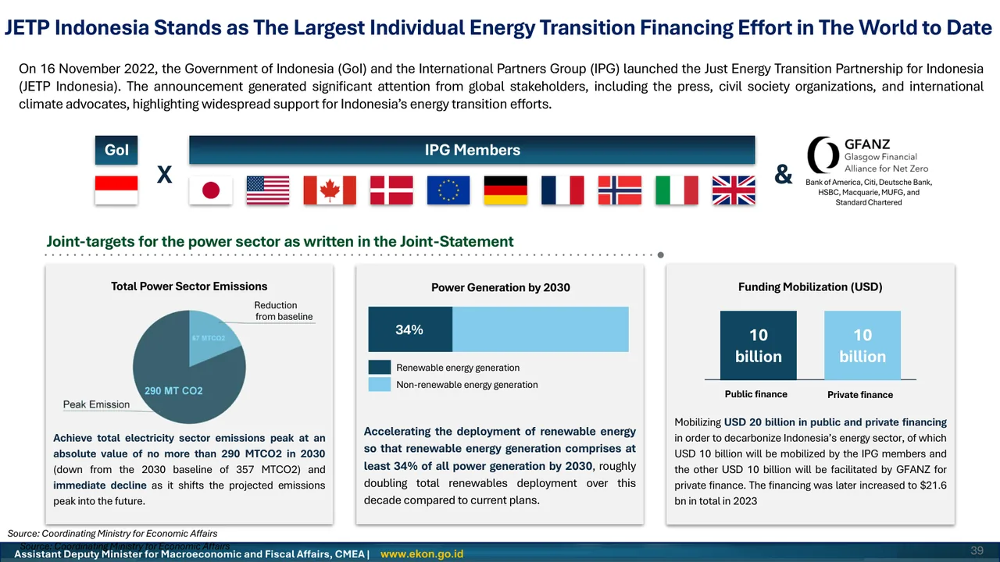


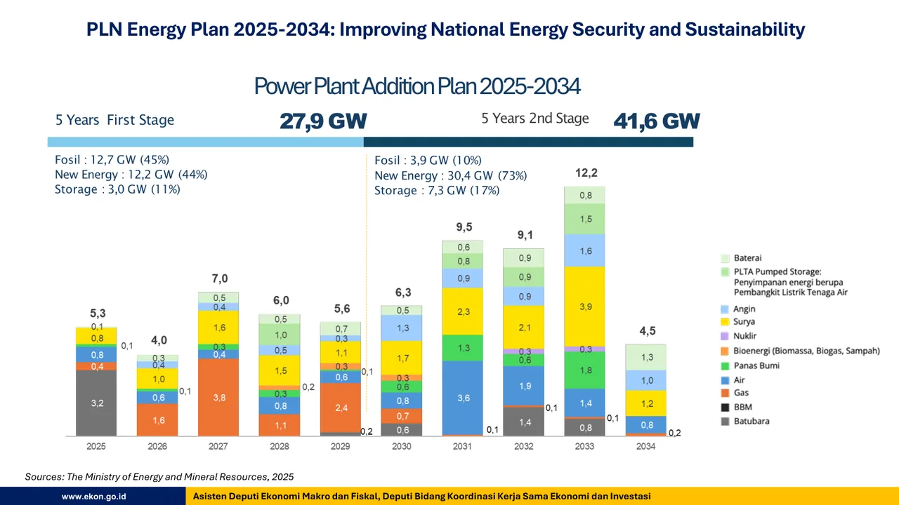
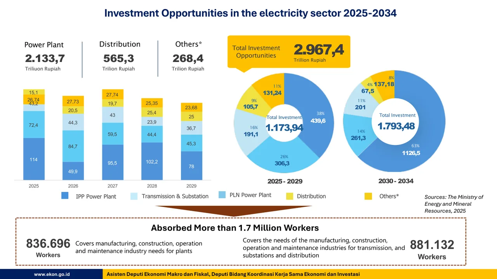
These sample post concepts show how I would create student-facing content for Cornell Career Services: clear, practical, visually organized, and easy to act on. Each concept is designed to reduce uncertainty and help students take one concrete next step.
Career planning does not have to start with panic. Cornell Career Services can help you explore options, ask better questions, and prepare before deadlines feel urgent. Start small this week: choose one resource, one question, or one appointment.
Many students wait until they urgently need a resume review or job application before engaging with CCS. This post lowers the barrier by reframing the first step as a single small question — not a plan. The save CTA also gives it a longer shelf life than a time-sensitive announcement.
Networking message formula:
① Who you are
② Why this person
③ One clear question
A good networking message does not need to be long. It needs to be specific, respectful, and easy to answer. Save this formula for your next outreach message — on LinkedIn, Cornell Career Network, or email.
Networking consistently comes up as the career skill students find most uncomfortable. A short Reel with a concrete, copy-paste-ready formula reduces that discomfort immediately. The message formula also connects directly to Cornell Career Network, where students can reach out to Big Red alumni — a resource the post can drive traffic to via the link in bio.
If your experience happened outside the U.S., you do not need to make it smaller. You need to make it easier for your audience to understand. Focus on what you did, who it served, and why it mattered. Then bring it to CCS — link in bio to book a resume review.
International students at Cornell often have strong, substantive experience that does not translate directly to U.S. resume norms — and the instinct is often to minimize it. This post reframes the problem: not "how do I shrink this?" but "how do I make this readable?" The before/after slide format is naturally swipeable, and the final slide creates a direct CTA to book a CCS appointment.
I would organize Cornell Career Services content around student questions, not office language. Each post should make one resource easier to understand and one action easier to take.
Quick question boxes: resume, networking, interviewing, LinkedIn, or internship search pain points.
Three takeaways from Cornell Career Services workshops for students who could not attend live.
Plain-language posts explaining Cornell Career Network, appointments, resume reviews, and interview prep.
I am comfortable creating independently, taking feedback, revising quickly, appearing on camera, and writing for audiences with different levels of familiarity. I would bring steady student insight, visual judgment, and a practical understanding of what makes career content feel approachable.
I would write from the student question first: What am I confused about, and what step would help me today?
I can help make career communication more useful for students translating experience across countries, systems, and norms.
Canva design, captions, reels, analytics, content calendars, and quick revisions are all part of the workflow I enjoy.